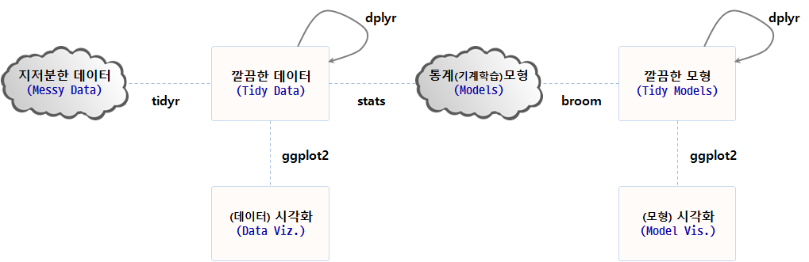
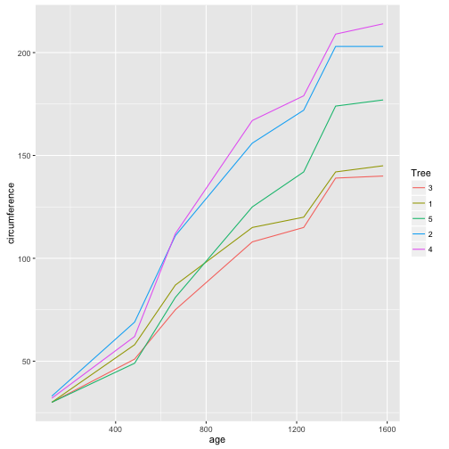
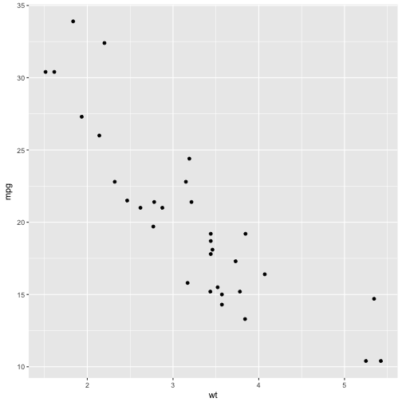
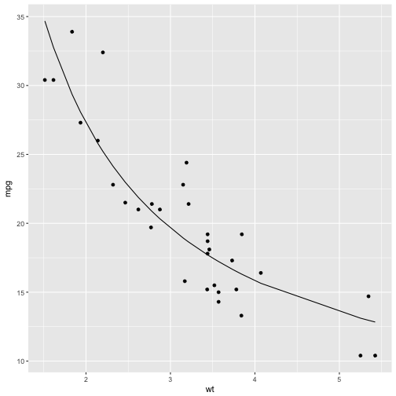
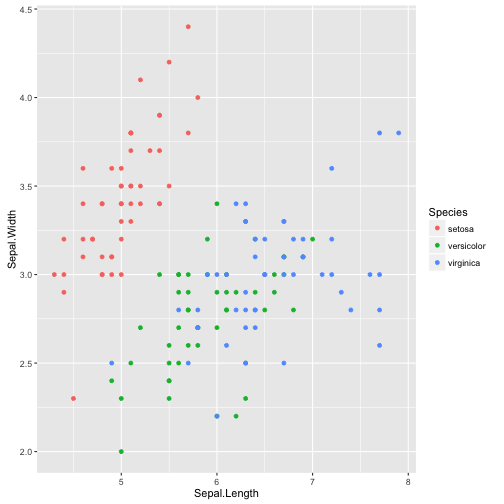
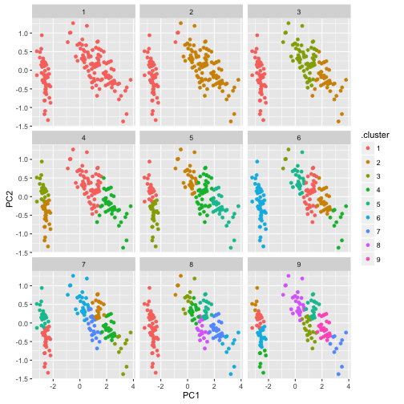
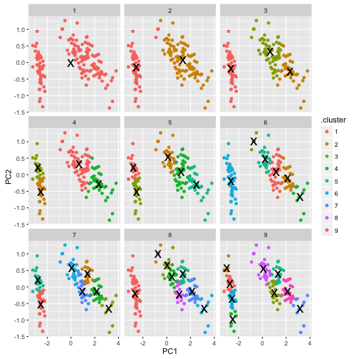
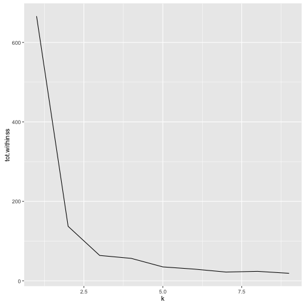
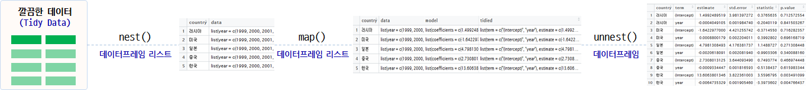

데이터 과학
깔끔한 데이터와 모형 – broom
학습 목표
- 깔끔한 3종세트
tidyr,dplyr,broom를 살펴본다.
1. broom 팩키지를 사용해야 되는 이유 1
broom 팩키지를 꼭 사용해야되는 이유는 R의 성공에서 찾을 수 있다. R이 성공하지 않았다면 이런 고민도, 데이터 과학이 이렇게 관심을 갖게 되지 않았다면 어쩌면 broom 팩키지를 생겨나지 않았을 수도 있다.
| David Robinson | Hadley Wickham |
|---|---|
| broom: Converting statistical models to tidy data frames, | Managing many models with R |
lmfit <- lm(mpg ~ wt, mtcars)
# summary(lmfit)선형 회귀식을 적합시키게 되면 회귀분석 결과는 4가지 산출결과를 출력한다.
- 모형 정보:
lm(formula = mpg ~ wt, data = mtcars) - 관측점 정보: 잔차 등
- 구성요소 정보: 회귀계수, t-값, p-값 등
- 모형 정보: \(R^2\) 값, F-통계량, 편차(deviance)
하지만, 이런 선형회귀모형 산출물은 다음과 같은 문제점이 목도된다.
- 회귀계수를 뽑아내는데 다수 단계가 필요하다.
data.frame(coef(summary(lmfit)))
- 회귀계수가 행명칭(
row names)라 모형에 바로 엮어 사용하기 번거럽다.(Intercept),wt에 변수명이 없음.
- 데이터프레임 변수명으로 사용하기 부적절하게 표현
Pr(>|t|)을 변수명으로 변경하기 까다로움
- 출력결과가 저장되지 않고 화면에 출력만 됨.
p-value: 1.294e-10
| 회귀 분석 결과 | 모형 출력 결과 | broom |
|---|---|---|
| Call: | ||
| lm(formula = mpg ~ wt, data = mtcars) | 데이터 적합 모형 | |
| Residuals: | 관측점 수준: 잔차, 적합값 등 | augment() |
| Min 1Q Median 3Q Max | ||
| -4.5432 -2.3647 -0.1252 1.4096 6.8727 | ||
| Coefficients: | 구성요소 수준: 회귀계수, p-값 | tidy() |
| Estimate Std. Error t value Pr(>|t|) | ||
| (Intercept) 37.2851 1.8776 19.858 < 2e-16 *** | ||
| wt -5.3445 0.5591 -9.559 1.29e-10 *** | ||
| Signif. codes: 0 ‘’ 0.001 ’’ 0.01 ’’ 0.05 ‘.’ 0.1 ‘’ 1 | ||
| Residual standard error: 3.046 on 30 degrees of freedom | 모형 수준: \(R^2\) 값, F-통계량, 편차 등 | glance() |
| Multiple R-squared: 0.7528, Adjusted R-squared: 0.7446 | ||
| F-statistic: 91.38 on 1 and 30 DF, p-value: 1.294e-10 |

2. broom 팩키지 3 종세트
후속작업을 이어나갈 수 있도록 모형 출력결과를 처리하는 broom 3종 세트가 준비되어 있다.
glance: 모형을 한줄로 간략하게 요약한다. 한줄 요약 모형에는 \(R^2\), 수정 \(R^2\), p-값, AIC, BIC, 편차(deviance)등이 포함된다.tidy: 모형에 대한 통계적 결과물을 요약해서 데이터프레임으로 제공한다. 데이터프레임에는 회귀계수, p-값, 군집분석의 경우 군집별 정보, t-검정, 다-검정의 경우 검정별 정보가 포함된다.augment: 원 데이터프레임에 칼럼을 추가해서 예측값, 잔차, 군집 배정등 각 관측점별 정보가 덧붙여진다.
tidy 실행결과 Pr(>|t|) p-값을 p.value 칼럼으로 $ 을 조합해서 뽑아내기 쉽게 되었다. 물론 coef(summary(lmfit)) 수고를 하지 않고도 $을 사용해서 term 칼럼에서 회귀계수 값을 뽑아내기 편리하게 되었다.
library(broom)
tidy(lmfit) term estimate std.error statistic p.value
1 (Intercept) 37.285126 1.877627 19.857575 8.241799e-19
2 wt -5.344472 0.559101 -9.559044 1.293959e-10
augment를 사용해서 일관된 규칙으로 적합값, 잔차 등을 .을 앞에 붙여 활용하기 쉽게 만들어 기존 변수명과 섞이는 일이 없게 되었다.
head(augment(lmfit)) .rownames mpg wt .fitted .se.fit .resid .hat
1 Mazda RX4 21.0 2.620 23.28261 0.6335798 -2.2826106 0.04326896
2 Mazda RX4 Wag 21.0 2.875 21.91977 0.5714319 -0.9197704 0.03519677
3 Datsun 710 22.8 2.320 24.88595 0.7359177 -2.0859521 0.05837573
4 Hornet 4 Drive 21.4 3.215 20.10265 0.5384424 1.2973499 0.03125017
5 Hornet Sportabout 18.7 3.440 18.90014 0.5526562 -0.2001440 0.03292182
6 Valiant 18.1 3.460 18.79325 0.5552829 -0.6932545 0.03323551
.sigma .cooksd .std.resid
1 3.067494 1.327407e-02 -0.76616765
2 3.093068 1.723963e-03 -0.30743051
3 3.072127 1.543937e-02 -0.70575249
4 3.088268 3.020558e-03 0.43275114
5 3.097722 7.599578e-05 -0.06681879
6 3.095184 9.210650e-04 -0.23148309
glance 함수를 사용해서 \(R^2\), 수정 \(R^2\), p-값, AIC, BIC, 편차(deviance) 각종 통계량이 한줄로 정리되었다.
glance(lmfit) r.squared adj.r.squared sigma statistic p.value df logLik
1 0.7528328 0.7445939 3.045882 91.37533 1.293959e-10 2 -80.01471
AIC BIC deviance df.residual
1 166.0294 170.4266 278.3219 30
3. broom 팩키지 지원현황
broom 팩키지가 각 수준별로 활용가능한 현황은 다음과 같다. tidy, augment, glance 3종 세트에 대해 각 모형별로 지원현황을 확인하고 broom 팩키지와 엮어 사용한다.
| Class | tidy |
glance |
augment |
|---|---|---|---|
| aareg | x | x | |
| acf | x | ||
| anova | x | ||
| aov | x | ||
| aovlist | x | ||
| Arima | x | x | |
| biglm | x | x | |
| binDesign | x | x | |
| binWidth | x | ||
| boot | x | ||
| btergm | x | ||
| cch | x | x | |
| character | x | ||
| cld | x | ||
| coeftest | x | ||
| confint.glht | x | ||
| coxph | x | x | x |
| cv.glmnet | x | x | |
| data.frame | x | x | x |
| default | x | x | x |
| density | x | ||
| dgCMatrix | x | ||
| dgTMatrix | x | ||
| dist | x | ||
| ergm | x | x | |
| felm | x | x | x |
| fitdistr | x | x | |
| ftable | x | ||
| gam | x | x | |
| gamlss | x | ||
| geeglm | x | ||
| glht | x | ||
| glmnet | x | x | |
| gmm | x | x | |
| htest | x | x | |
| kappa | x | ||
| kde | x | ||
| kmeans | x | x | x |
| Line | x | ||
| Lines | x | ||
| list | x | x | |
| lm | x | x | x |
| lme | x | x | x |
| lmodel2 | x | x | |
| logical | x | ||
| manova | x | ||
| map | x | ||
| matrix | x | x | |
| Mclust | x | x | x |
| merMod | x | x | x |
| mle2 | x | ||
| multinom | x | x | |
| nlrq | x | x | x |
| nls | x | x | x |
| NULL | x | x | x |
| numeric | x | ||
| pairwise.htest | x | ||
| plm | x | x | x |
| poLCA | x | x | x |
| Polygon | x | ||
| Polygons | x | ||
| power.htest | x | ||
| prcomp | x | x | |
| pyears | x | x | |
| rcorr | x | ||
| ridgelm | x | x | |
| rjags | x | ||
| roc | x | ||
| rowwise_df | x | x | x |
| rq | x | x | x |
| rqs | x | x | x |
| sparseMatrix | x | ||
| SpatialLinesDataFrame | x | ||
| SpatialPolygons | x | ||
| SpatialPolygonsDataFrame | x | ||
| spec | x | ||
| stanfit | x | ||
| stanreg | x | x | |
| summary.glht | x | ||
| summary.lm | x | x | |
| summaryDefault | x | x | |
| survexp | x | x | |
| survfit | x | x | |
| survreg | x | x | x |
| table | x | ||
| tbl_df | x | x | x |
| ts | x | ||
| TukeyHSD | x | ||
| zoo | x |
4. 다수 모형 2
다수 모형이 가능한 컴퓨팅 파워가 커감에 따라 수학적으로 엄격하게 접근하거나 비용을 많이 들여 실험을 수행하기 보다는 컴퓨터를 활용한 접근법이 경제적으로도 효과적이며 정확성에서도 높은 품질을 보여주기 때문이다. 하지만, 모형을 하나만 갖을 때보다 다수 모형이 출현하는 경우가 빈번하게 목도된다.
- 모수를 달리함
- 다른 모형을 적용
- 부츠트랩에 따른 반복
- 하위집단 모형
- 앙상블 투표 모형
이런 다양한 경우 데이터에 적합시킨 수많은 모형 결과를 저장하여 이를 분석할 필요가 있다. 이런 경우 편리한 방식을 제공하는 팩키지가 broom이다.
4.1. dplyr과 broom 결합 3
broom은 일관된 형식으로 단일 분석결과를 요약하는데 매우 유용하다. 특히, dplyr 팩키지 group_by(), do() 함수와 궁합이 잘 맞는다.
##===========================================================================
## 01. broom & dplyr
##===========================================================================
suppressWarnings(suppressMessages(library(broom)))
suppressWarnings(suppressMessages(library(dplyr)))
suppressWarnings(suppressMessages(library(ggplot2)))
data("Orange")
#---------------------------------------------------------------------------
# 1.1. 오렌지 나무 시각화
#---------------------------------------------------------------------------
ggplot(Orange, aes(age, circumference, color = Tree)) +
geom_line()
#---------------------------------------------------------------------------
# 1.2. 전체 상관분석과 group_by() 나무집단별 상관분석
#---------------------------------------------------------------------------
cor(Orange$age, Orange$circumference)[1] 0.9135189
Orange %>% group_by(Tree) %>%
summarize(correlation = cor(age, circumference)) %>%
arrange(desc(correlation))# A tibble: 5 × 2
Tree correlation
<ord> <dbl>
1 3 0.9881766
2 5 0.9877376
3 2 0.9873624
4 1 0.9854675
5 4 0.9844610
#---------------------------------------------------------------------------
# 1.3. 전체 상관분석과 나무집단별 상관분석
#---------------------------------------------------------------------------
cor.test(Orange$age, Orange$circumference)
Pearson's product-moment correlation
data: Orange$age and Orange$circumference
t = 12.9, df = 33, p-value = 1.931e-14
alternative hypothesis: true correlation is not equal to 0
95 percent confidence interval:
0.8342364 0.9557955
sample estimates:
cor
0.9135189
Orange %>% group_by(Tree) %>%
do(tidy(cor.test(.$age, .$circumference)))Source: local data frame [5 x 9]
Groups: Tree [5]
Tree estimate statistic p.value parameter conf.low conf.high
<ord> <dbl> <dbl> <dbl> <int> <dbl> <dbl>
1 3 0.9881766 14.41188 2.901046e-05 5 0.9189858 0.9983260
2 1 0.9854675 12.97258 4.851902e-05 5 0.9012111 0.9979400
3 5 0.9877376 14.14686 3.177093e-05 5 0.9160865 0.9982635
4 2 0.9873624 13.93129 3.425041e-05 5 0.9136142 0.9982101
5 4 0.9844610 12.53575 5.733090e-05 5 0.8946782 0.9977964
# ... with 2 more variables: method <fctr>, alternative <fctr>
#---------------------------------------------------------------------------
# 1.4. 나무집단별 회귀분석
#---------------------------------------------------------------------------
Orange %>% group_by(Tree) %>%
do(tidy(lm(age ~ circumference, data=.)))Source: local data frame [10 x 6]
Groups: Tree [5]
Tree term estimate std.error statistic p.value
<ord> <chr> <dbl> <dbl> <dbl> <dbl>
1 3 (Intercept) -209.512321 85.2682904 -2.4570954 5.743323e-02
2 3 circumference 12.038885 0.8353445 14.4118806 2.901046e-05
3 1 (Intercept) -264.673437 98.6205569 -2.6837553 4.362351e-02
4 1 circumference 11.919245 0.9188029 12.9725813 4.851902e-05
5 5 (Intercept) -54.484097 76.8862788 -0.7086323 5.102144e-01
6 5 circumference 8.787132 0.6211365 14.1468610 3.177093e-05
7 2 (Intercept) -132.439725 83.1314146 -1.5931369 1.720092e-01
8 2 circumference 7.795225 0.5595479 13.9312907 3.425041e-05
9 4 (Intercept) -76.513671 88.2943757 -0.8665747 4.257969e-01
10 4 circumference 7.169842 0.5719516 12.5357484 5.733090e-05
모든 오렌지 나무를 대상으로 나무연령과 나무둘레를 상관 관계가 0.9135189로 나타나지만, 나무를 집단별로 상관관계를 구하게 되면 0.98...으로 더 높아지는 것이 확인된다.
각 오렌지 나무 집단별로 회귀분석을 수행하고 이를 tidy로 깔끔하게 정제했다. 하지만, 꼭 그렇게 할 필요는 없고, 전체 모형에 대한 glance(), 각 관측점에 대한 결과 augment(), 그리고 모형 구성요소에 대해 tidy()를 저장하여 후속분석에 입력값으로 사용할 수도 있다.
추가 후속 분석
- 가장 영향이 큰 변수 식별을 위해 p-값 기준으로 정렬
- p-값 히스토그램
- Vocano 그래프를 통해 p-값을 효과크기 추정과 비교
#---------------------------------------------------------------------------
# 1.5. `tidy` 출력뿐만 아니라 전체 출력결과 재사용
#---------------------------------------------------------------------------
data(mtcars)
lm_mod <- mtcars %>% group_by(am) %>%
do(fit = lm(wt ~ mpg + qsec + gear, .))
lm_modSource: local data frame [2 x 2]
Groups: <by row>
# A tibble: 2 × 2
am fit
* <dbl> <list>
1 0 <S3: lm>
2 1 <S3: lm>
# tidy, augment, glance
lm_mod %>% tidy(fit)Source: local data frame [8 x 6]
Groups: am [2]
am term estimate std.error statistic p.value
<dbl> <chr> <dbl> <dbl> <dbl> <dbl>
1 0 (Intercept) 4.91754623 1.39665675 3.52094116 0.0030879519
2 0 mpg -0.19188914 0.04428329 -4.33321746 0.0005909953
3 0 qsec 0.09191361 0.09832067 0.93483509 0.3646797728
4 0 gear 0.14653754 0.36819363 0.39799041 0.6962441554
5 1 (Intercept) 4.28307028 3.45859958 1.23838281 0.2469014834
6 1 mpg -0.10098320 0.02943409 -3.43082488 0.0074984578
7 1 qsec 0.03983165 0.15112135 0.26357393 0.7980436972
8 1 gear -0.02288330 0.34878226 -0.06560912 0.9491232955
lm_mod %>% augment(fit)Source: local data frame [32 x 12]
Groups: am [2]
am wt mpg qsec gear .fitted .se.fit .resid .hat
<dbl> <dbl> <dbl> <dbl> <dbl> <dbl> <dbl> <dbl> <dbl>
1 0 3.215 21.4 19.44 3 3.037532 0.2481648 0.17746820 0.22627982
2 0 3.440 18.7 17.02 3 3.333202 0.2083952 0.10679845 0.15956625
3 0 3.460 18.1 20.22 3 3.742459 0.2556630 -0.28245859 0.24016026
4 0 3.570 14.3 15.84 3 4.069056 0.2070275 -0.49905571 0.15747857
5 0 3.190 24.4 20.00 4 2.659874 0.3007101 0.53012646 0.33224734
6 0 3.150 22.8 22.90 4 3.233446 0.3628134 -0.08344563 0.48365086
7 0 3.440 19.2 18.30 4 3.501444 0.2989364 -0.06144393 0.32833948
8 0 3.440 17.8 18.90 4 3.825237 0.2911555 -0.38523690 0.31146937
9 0 4.070 16.4 17.40 3 3.809474 0.1397045 0.26052626 0.07171104
10 0 3.730 17.3 17.60 3 3.655156 0.1466485 0.07484376 0.07901707
# ... with 22 more rows, and 3 more variables: .sigma <dbl>,
# .cooksd <dbl>, .std.resid <dbl>
lm_mod %>% glance(fit)Source: local data frame [2 x 12]
Groups: am [2]
am r.squared adj.r.squared sigma statistic p.value df
<dbl> <dbl> <dbl> <dbl> <dbl> <dbl> <int>
1 0 0.6247125 0.5496550 0.5216957 8.323119 0.0017021627 4
2 1 0.8332251 0.7776335 0.2909423 14.988320 0.0007593904 4
# ... with 5 more variables: logLik <dbl>, AIC <dbl>, BIC <dbl>,
# deviance <dbl>, df.residual <int>
4.2. broom 부츠트랩 4
mtcars 데이터셋에서 연비와 차체무게와의 비선형 관계를 회귀식으로 적합해본다. 이러한 비선형 모형을 상정하는 이유는 산점도 결과 차체무게와 연비사이 역의 관계가 파악되기 때문이다. 직관적으로도 고급대형차가 차체무게가 많이 나가고 연비가 떨어지는 것은 널리 알려진 사실이다.
\[연비 = k \times \frac{1}{차체무게} + \beta\]
# 산점도
ggplot(mtcars, aes(wt, mpg)) +
geom_point()
# 연비 = 1/차체무게, 비선형 모형 추정
nlsfit <- nls(mpg ~ k / wt + b, mtcars, start=list(k=1, b=0))
summary(nlsfit)
Formula: mpg ~ k/wt + b
Parameters:
Estimate Std. Error t value Pr(>|t|)
k 45.829 4.249 10.786 7.64e-12 ***
b 4.386 1.536 2.855 0.00774 **
---
Signif. codes: 0 '***' 0.001 '**' 0.01 '*' 0.05 '.' 0.1 ' ' 1
Residual standard error: 2.774 on 30 degrees of freedom
Number of iterations to convergence: 1
Achieved convergence tolerance: 2.877e-08
# 데이터와 비선형모형 시각화
ggplot(mtcars, aes(wt, mpg)) +
geom_point() +
geom_line(aes(y=predict(nlsfit)))
부츠트랩 표본을 100개 뽑아서 사실 더 많이 만들어 모형을 적합해도 된다. tidy함수를 통해 초기값 k=1, b=0으로 두고 비선형 회귀모형을 적합시켜 비선형 회귀계수에 대한 중위수와 95% 신뢰구간값을 추정한다.
또한, augment 함수로 100개 모형에 대한 관측점별 적합값을 산출하여 이를 시각화한다.
bootnls <- mtcars %>% bootstrap(100) %>%
do(tidy(nls(mpg ~ k / wt + b, data=., start=list(k=1, b=0))))
# 추정값과 95% 신뢰구간
alpha <- .05
bootnls %>% group_by(term) %>% summarize(median = median(estimate),
low = quantile(estimate, alpha / 2),
high = quantile(estimate, 1 - alpha / 2))# A tibble: 2 × 4
term median low high
<chr> <dbl> <dbl> <dbl>
1 b 4.077803 1.130968 6.435653
2 k 46.106434 40.314750 55.050933
# 비선형 회귀모형 부츠트랩 시각화
bootnls_aug <- mtcars %>% bootstrap(100) %>%
do(augment(nls(mpg ~ k / wt + b, data=., start=list(k=1, b=0)), data=.))
ggplot(bootnls_aug, aes(wt, mpg)) + geom_point() +
geom_line(aes(y=.fitted, group=replicate), alpha=.2)
4.3. broom k-평균 군집분석 5
k-평균 군집분석에 broom을 사용하여 최적 군집 k 갯수를 계산해 낼 수 있다. 이를 시연하기 위해 몇가지 사전작업을 수행한다. 2차원 평면에 시각화를 위해 주성분분석(prcomp)으로 주요인을 2개를 뽑아내고 이를 바탕으로 k-평균 알고리즘을 군집갯수를 1에서부터 9까지 변화시켜 최적 군집 k 3을 계산해 낸다.
data(iris)
ggplot(iris, aes(Sepal.Length, Sepal.Width, color = Species)) + geom_point()
iris_df <- prcomp(iris[, c("Sepal.Length", "Sepal.Width", "Petal.Length", "Petal.Width")])$x[,1:2]
kclust <- kmeans(iris_df, centers = 3)
kclust K-means clustering with 3 clusters of sizes 61, 39, 50
Cluster means:
PC1 PC2
1 0.665676 0.3316042
2 2.346527 -0.2739386
3 -2.642415 -0.1908850
Clustering vector:
[1] 3 3 3 3 3 3 3 3 3 3 3 3 3 3 3 3 3 3 3 3 3 3 3 3 3 3 3 3 3 3 3 3 3 3 3
[36] 3 3 3 3 3 3 3 3 3 3 3 3 3 3 3 2 1 2 1 1 1 1 1 1 1 1 1 1 1 1 1 1 1 1 1
[71] 1 1 1 1 1 1 1 2 1 1 1 1 1 1 1 1 1 1 1 1 1 1 1 1 1 1 1 1 1 1 2 1 2 2 2
[106] 2 1 2 2 2 2 2 2 1 1 2 2 2 2 1 2 1 2 1 2 2 1 1 2 2 2 2 2 1 2 2 2 2 1 2
[141] 2 2 1 2 2 2 1 2 2 1
Within cluster sum of squares by cluster:
[1] 31.87959 18.87111 13.06924
(between_SS / total_SS = 90.4 %)
Available components:
[1] "cluster" "centers" "totss" "withinss"
[5] "tot.withinss" "betweenss" "size" "iter"
[9] "ifault"
tidy(kclust) x1 x2 size withinss cluster
1 0.665676 0.3316042 61 31.87959 1
2 2.346527 -0.2739386 39 18.87111 2
3 -2.642415 -0.1908850 50 13.06924 3
군집 갯수를 1에서부터 9까지 순차적으로 변화시키면서 k-평균 군집분석을 수행한 값을 kclusts 객체에 저장한다. 이를 바탕으로 모형결과는 tidy, 관측점 결과는 augment, 모형 결과는 glance로 뽑아낸다. 이를 군집수를 바꿔가면서 ggplot, facet_wrap과 조합하여 시각화한다.
물론 팔꿈치가 꺾이는 3개 지점이 최적 군집이 되는 것도 확인된다.
# 최적 군집갯수를 위한 개별 군집분석 후 시각화
kclusts <- data.frame(k=1:9) %>% group_by(k) %>% do(kclust=kmeans(iris_df, .$k)) %>% ungroup()
clusters <- kclusts %>% group_by(k) %>% do(tidy(.$kclust[[1]]))
assignments <- kclusts %>% group_by(k) %>% do(augment(.$kclust[[1]], iris_df))
clusterings <- kclusts %>% group_by(k) %>% do(glance(.$kclust[[1]]))
names(clusters) <- c("k", "PC1", "PC2", "size", "withinss", "cluster")
p1 <- ggplot(assignments, aes(PC1, PC2)) + geom_point(aes(color=.cluster)) + facet_wrap(~ k)
p1
p2 <- p1 + geom_point(data=clusters, size=7, shape="x")
p2
# 최적 군집갯수
ggplot(clusterings, aes(k, tot.withinss)) + geom_line()
5. UN 총회 투표 데이터
UN 총회 투표 데이터를 가지고 broom 팩키지 모형데이터를 처리하는 과정을 살펴본다.
tidy팩키지를 활용하여 깔끔한 데이터(tidy data)를 생성한다.nest()함수를 사용해서 데이터프레임 리스트(a list of dataframe)을 생성한다.- 특정 변수를 기준으로 데이터프레임을 각 행별로 내장한 형태
map()함수를 사용해서 각종 R 통계 모형(lm등)을 적용시킨다.- 모형을 적합시켜 나온 모형 결과물을
tidy()함수에 적용시켜 깔끔한 형태로 변형시킨다.
- 모형을 적합시켜 나온 모형 결과물을
unnest()함수를 사용하여 작업하기 쉬운 데이터프레임 형태로 원복시킨다.- \(R^2\) 혹은 \(p-\)값 기준등 수많은 모형 중에서 유의미한 것만 뽑아낸다.

# 0. 환경설정----------------------------------------
library(purrr)
library(tidyverse)
library(ggplot2)
library(readxl)
library(broom)
# 1. 데이터 -----------------------------------------
# https://dataverse.harvard.edu/dataset.xhtml?persistentId=hdl:1902.1/12379
## 국가 코드표 : COW country codes.csv
cow_ct <- read_csv("data/COW country codes.csv")
cow_ct <- cow_ct %>% dplyr::select(country_code=StateAbb, ccode=CCode, country=StateNme)
# 한국, 미국, 일본, 중국, 러시아
korea_5 <- c("United States of America", "South Korea", "Japan", "China", "Russia")
## UN 토의주제 : descriptionsnew.xls
description <- read_excel("data/descriptionsnew.xls", sheet="descriptions")
## Vote : RawVotingdata.tab --> votes_five_nations.csv
votes <- read_csv("data/votes_five_nations.csv")
votes <- votes %>% dplyr::select(ccode, session, rcid, vote, year, country_code=StateAbb,country=StateNme)
# 2. 데이터 정제-----------------------------------------
votes <- votes %>% mutate(year = session + 1945)
votes <- votes %>% left_join(cow_ct, by=c("ccode", "country"))
df <- votes %>%
inner_join(description, by=c("session", "rcid")) %>%
dplyr::filter(!is.na(vote)) %>%
dplyr::filter(country %in% korea_5)
# dplyr::filter(country %in% "South Korea")
df_long <- df %>% gather(topic, has_topic, me:ec) %>%
dplyr::filter(has_topic == 1, year >= 1999)
df_long <- df_long %>%
dplyr::mutate(topic = dplyr::recode(topic,
me = "팔레스타인 갈등",
nu = "핵무기와 핵물질",
di = "군비통제 및 군비해제",
hr = "인권",
co = "식민주의",
ec = "경제개발")) %>%
dplyr::mutate(country = dplyr::recode(country,
`United States of America` = "미국",
`South Korea` = "한국",
Japan = "일본",
China = "중국",
Russia = "러시아"))
## 2.1. 전처리-----------------------------------------
# 년도별 찬성율
by_year_country <- df_long %>% group_by(year, country) %>%
summarise(total = n(),
pcnt_yes = mean(vote==1, na.rm=TRUE)) %>%
ungroup()
# 년도별 주제별 찬성율
by_year_country_topic <- df_long %>% group_by(year, country, topic) %>%
summarise(total = n(),
pcnt_yes = mean(vote==1, na.rm=TRUE)) %>%
ungroup()각 단계별 모형 작업처리 결과는 다음과 같다.
# 3. 회귀 모형-----------------------------------------
## 3.1. 국가별 찬성율
by_year_country %>% tidyr::nest(-country)# A tibble: 5 × 2
country data
<chr> <list>
1 러시아 <tibble [15 × 3]>
2 미국 <tibble [15 × 3]>
3 일본 <tibble [15 × 3]>
4 중국 <tibble [15 × 3]>
5 한국 <tibble [15 × 3]>
by_year_country %>% tidyr::nest(-country) %>%
mutate(model = map(data, ~ lm(pcnt_yes ~ year, data = .)),
tidied = map(model, tidy)) # A tibble: 5 × 4
country data model tidied
<chr> <list> <list> <list>
1 러시아 <tibble [15 × 3]> <S3: lm> <data.frame [2 × 5]>
2 미국 <tibble [15 × 3]> <S3: lm> <data.frame [2 × 5]>
3 일본 <tibble [15 × 3]> <S3: lm> <data.frame [2 × 5]>
4 중국 <tibble [15 × 3]> <S3: lm> <data.frame [2 × 5]>
5 한국 <tibble [15 × 3]> <S3: lm> <data.frame [2 × 5]>
by_year_country %>% tidyr::nest(-country) %>%
mutate(model = map(data, ~ lm(pcnt_yes ~ year, data = .)),
tidied = map(model, tidy)) %>%
unnest(tidied)# A tibble: 10 × 6
country term estimate std.error statistic p.value
<chr> <chr> <dbl> <dbl> <dbl> <dbl>
1 러시아 (Intercept) 1.4992489519 3.981397272 0.3765635 0.712572554
2 러시아 year -0.0004049105 0.001984740 -0.2040119 0.841503267
3 미국 (Intercept) -1.6422977000 4.421255742 -0.3714550 0.716282357
4 미국 year 0.0008800179 0.002204011 0.3992802 0.696168719
5 일본 (Intercept) 4.7981308493 4.176381737 1.1488727 0.271308448
6 일본 year -0.0020618091 0.002081940 -0.9903306 0.340088160
7 중국 (Intercept) 2.7308013125 3.644093490 0.7493774 0.466974448
8 중국 year -0.0009334447 0.001816593 -0.5138437 0.615983344
9 한국 (Intercept) 13.6063801346 3.822361003 3.5596795 0.003491099
10 한국 year -0.0064735329 0.001905460 -3.3973602 0.004766437
country_coefficients <- by_year_country %>%
tidyr::nest(-country) %>%
mutate(model = map(data, ~ lm(pcnt_yes ~ year, data = .)),
tidied = map(model, tidy)) %>%
unnest(tidied)p.adjust 다중비교(Multiple Comparison)를 적용하여 \(p-\)값 남용에 대한 문제를 회피한다. 6 7
country_coefficients %>%
dplyr::filter(term=="year") %>%
dplyr::filter(p.adjust(p.value) < .05)# A tibble: 1 × 6
country term estimate std.error statistic p.value
<chr> <chr> <dbl> <dbl> <dbl> <dbl>
1 한국 year -0.006473533 0.00190546 -3.39736 0.004766437